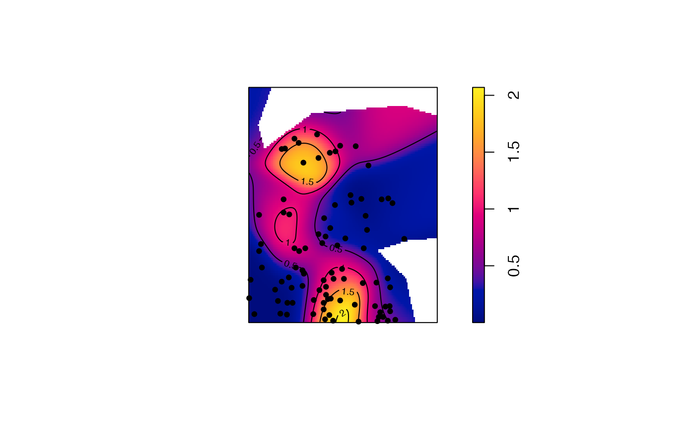

Spatial smoothing of individual dbmss's
Smooth.wmppp.RdPerforms spatial smoothing of the individual values of distance-based measures computed in the neighborhood of each point (Marcon and Puech, 2023).
Arguments
- X
A point pattern (
wmppp.object).- fvind
An object of class
fv, seefv.object, obtained a distance-based method, such asMhatwith individual values (argumentIndividual = TRUE).- distance
The distance at which the function value must be considered. The default value is the median distance used to calculate the function values.
- Quantiles
If
FALSE(default), the dbmss is smoothed to produce a map of the measure. IfTRUE, its quantiles (computed byMhatwith argumentQuantiles = TRUE) are smoothed to produce a map of the confidence level of the measure.- Weighted
If
TRUE(default), the point weights are taken into account for smoothing.- sigma
The bandwidth used for smoothing. A Gaussian kernel is used (see
Smooth.ppp). Its bandwidth is chosen by default according to Scott's rule (seebw.scott).- Adjust
Force the selected bandwidth (
sigma) to be multiplied byAdjust. Setting it to values smaller than one (1/2 for example) will sharpen the estimation.- Nbx, Nby
The number of columns and rows (pixels) of the resulting map, 128 by default. Increase it for quality, paid by increasing computing time.
- ...
Extra arguments, passed to
Smooth.ppp.- CheckArguments
If
TRUE(default), the function arguments are verified. Should be set toFALSEto save time in simulations for example, when the arguments have been checked elsewhere.
Value
An image that can be plotted.
If quantiles have been computed in fvind, attributes "High" and "Low" contain logical vectors to indentify significantly high and low quantiles.
References
Marcon, E. and Puech, F. (2023). Mapping distributions in non-homogeneous space with distance-based methods. Journal of Spatial Econometrics 4(1), 13.
Examples
ReferenceType <- "V. Americana"
NeighborType <- "Q. Rosea"
# Calculate individual intertype M(distance) values
fvind <- Mhat(paracou16, r=c(0, 30), ReferenceType, NeighborType, Individual=TRUE)
# Plot the point pattern with values of M(30 meters)
p16_map <- Smooth(paracou16, fvind, distance=30)
plot(p16_map, main = "")
# Add the reference points to the plot
is.ReferenceType <- marks(paracou16)$PointType == ReferenceType
points(x=paracou16$x[is.ReferenceType], y=paracou16$y[is.ReferenceType], pch=20)
# Add contour lines
contour(p16_map, nlevels = 5, add = TRUE)
